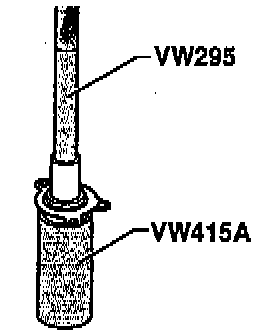
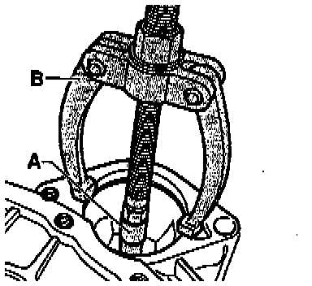
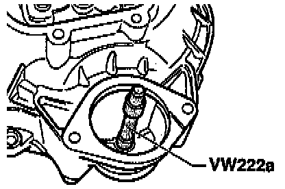
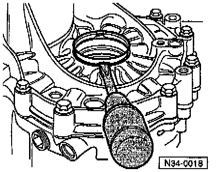
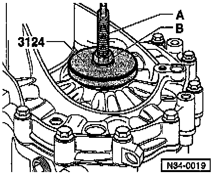

Transmission and Clutch Housings

COMPONENT NOTES AND INFORMATION
1 Transmission housing
- If replaced, adjust input shaft and differential. Adjustments
2 Needle roller bearing
- For output shaft
- Removing, refer to Fig. 1, below.
- Installing and securing, refer to Fig. 2, below.
3 Oil filler plug
- Tighten to: 25 Nm (18 ft lb), below.
- Without magnet
4 Outer race, tapered roller bearing
- For output shaft
- Removing and installing. Overhaul
- If replaced, adjust output shaft. Overhaul
5 Shim
- For output shaft
- Adjustment overview. Adjustments
6 Shim
- For input shaft
- Adjustment overview.
7 Outer race, tapered roller bearing
- For input shaft
- Removing and installing. Overhaul
- If replaced, adjust input shaft. Adjustments
8 Outer race, tapered roller bearing
- For input shaft
- Removing and installing. Overhaul
9 Needle bearing for reverse shaft
- Removing and installing. Overhaul
10 Dowel sleeve
- Quantity: 2
11 Starter bushing
- Removing, refer to Fig. 5, below.
- Installing, refer to Fig. 6, below.
- Can be replaced without removing transmission
12 Clutch housing
- When replacing, adjustments are necessary, refer to Adjustment Overview, Repair Group 39
13 O-ring
- Always replace
- Install on clutch release bearing guide sleeve -14- and lubricate with multi-purpose grease
14 Guide sleeve
- With oil seal
- Seal, removing, refer to Fig. 3, below.
- Seal, installing, refer to Fig. 4, below.
- To change oil seal, remove guide sleeve
15 Self-locking socket-head bolt
- Tighten to: 20 Nm (15 ft lb)
- Always replace
16 Speedometer drive
- Tighten to: 30 Nm (22 ft lb)
17 Oil drain plug
- Tighten to: 25 Nm (18 ft lb)
- Without magnet
18 Outer race, tapered roller bearing
- For differential
- Removing and installing. Service and Repair
- If replaced, adjust differential. Adjustments
19 Magnet
- Located in housing, secured in place by surface of mating housing
20 Outer race, tapered roller bearing
- For differential
- Removing and installing. Service and Repair
- If replaced, adjust differential. Adjustments
21 Shim For differential
- Adjustment Overview. Adjustments
22 Sleeve
- For oil seal -23-
- Installed on transmissions with springs behind axle flange shafts
- Removing, refer to Fig. 7, below.
- Installing, refer to Fig. 8, below.
23 Oil seal
- For transmissions with springs behind axle flange shafts, refer to Transmission Housing Cover and 5TH Gear Removing/Installing.
- Replacing, refer to Replacement. Overhaul
24 Oil seal
- For transmissions without springs behind axle flange shafts, refer to Transmission Housing Cover and 5TH Gear Removing/Installing. Service and Repair
- Replacing, refer to Replacement. Service and Repair
PROCEDURES

Fig. 1 Driving out needle roller bearing for output shaft

Fig. 2 Driving in and seating needle roller bearing for output shaft
- Secure needle roller bearing in transmission housing by staking with a punch at three points, 120° apart.

Fig. 3 Removing oil seal from clutch release bearing guide sleeve

Fig. 4 Installing oil seal in guide sleeve

Fig. 5 Removing starter bushing
A - Internal puller, 14.5-18.5 mm e.g. Kukko 21/2
B - Counter support e.g. Kukko 22/1

Fig. 6 Installing starter bushing

Fig. 7 Prying out sleeve with screwdriver

Fig. 8 Pulling in sleeve
A - Threaded rod from seal installer 3066
B - 12 mm nut with washer
- Screw threaded rod -A- into differential threaded piece
- Pull sleeve in onto stop with thrust piece 3124 by turning nut-B-.
NOTE: When transmission is disassembled, press sleeve in with thrust piece 3124 onto stop.